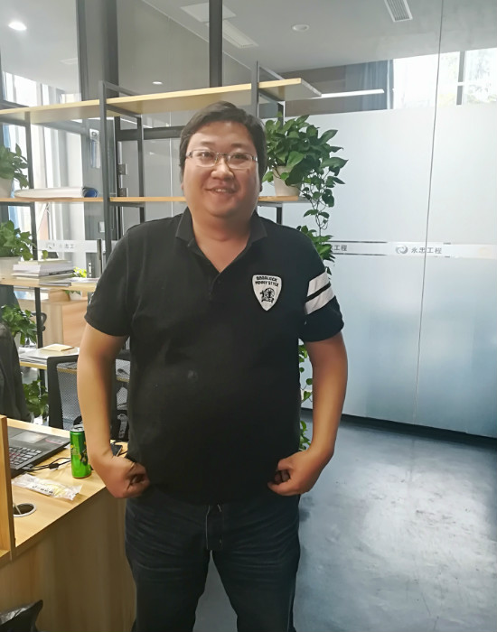

2018年3月6日，公司出差丹巴的设计人员反馈，我公司设计部副经理陈国涛负责的丹巴县聂呷中心校风貌改造项目施工图设计获得业主满意，其一心为业主服务的态度和理念也得到业
主认可与表扬。经公司总工办复核确认，公司领导审批决定，为表彰陈国涛陈经理充分践行公司“以客户为中心、以奋斗者为本、以结果为导向“的核心价值理念，公司将该项目中陈国
涛的质量调整系数由K1 调整为1.2，以示嘉奖，后续工作望陈经理再接再厉！特此全员表扬！
